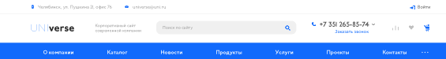
header-template = 1, меню с картинками
01 · Шапка
Шапка — Тип 4
Настройка → Шапка → Шаблон: Тип 4меню инфоблоком с картинкамизакреплена при прокруткеПочемуКомпактная шапка в две строки: логотип и контакты сверху, меню и поиск ниже. Выбор Андрея, подтверждён 11.09.
Наполнение
- Логотип горизонтальный (Russo One + Montserrat Bold), высота 40 px.
- Телефон СПб, «Заказать звонок», eav@barus.tools.
- Меню: Каталог · Услуги · Бренды · О компании · Проекты · Новости · Контакты.
- Полоса каталога: 8 категорий с фото (см. блок 04).
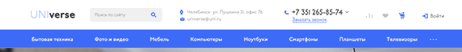
Тип 4 — отложенная альтернатива: поиск и телефон в одной строке.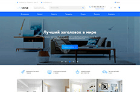
banner = Тип 1, 3 слайда, тёмная подложка под текстом
02 · Первый экран
Баннер — Тип 5
Главная → Баннер → Тип 51400×5003 слайдаПочемуКрупный визуал на весь экран, привычный для промышленного сайта. Предметные фото инструмента тёмные, поэтому под заголовком и текстом — полупрозрачная тёмная плашка; Екатерина закладывает её в макет баннера.
Наполнение
- Слайд 1: «Инструмент для листогибов и координатно-пробивных прессов» — фото пуансон-матрица Amada. Кнопка «В каталог».
- Слайд 2: «Изготовим по чертежу за 10–20 дней» — фото цеха. Кнопка «Отправить чертёж».
- Слайд 3: «Склад в СПб, отгрузка 1–3 дня» — фото склада. Кнопка «Наличие».
- Заголовки Russo One 40 px, подзаголовок Montserrat 18 px, одна кнопка на слайд.
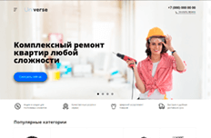
Тип 5 — отложенная альтернатива, текст на белом.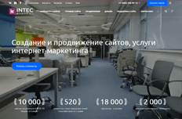
Тип 11 — баннер с цифрами, запасной.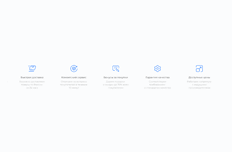
advantages = Иконки 2, 4 элемента
03 · Преимущества
Преимущества — Иконки 2
Главная → Преимущества → Иконки 24 в строкуПочемуСразу под баннером — четыре факта, по которым B2B-закупщик решает, остаться ли на сайте: наличие, срок, свои производство, доставка. Одна строка, без фото, не спорит с баннером.
Наполнение
- Склад в СПб — 5 000+ позиций в наличии.
- Собственное производство — изготовление по чертежу.
- Официальный поставщик Amada, TRUMPF, Wila, Bystronic, LVD.
- Доставка по РФ и СНГ, отгрузка 1–3 дня.
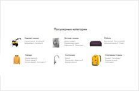
sections = Список 1, 8 категорий с иконками
04 · Каталог
Разделы каталога — Плитки 2
Главная → Разделы → Плитки 22 ряда × 4фото 600×400ПочемуГлавный переход с главной — в каталог. Список 1 показывает все 8 категорий в один экран, не требует предметных фото; иконки — из отраслевого набора 2022 или линейные INTEC.
Наполнение
- Инструмент для листогибов · Пуансоны и матрицы для КПП · Ножи для гильотин · Толстолистовая штамповка · Оснастка для лазера · Расходники для лазера · Ролики и колёса · Прочее.
- Фото: предметная съёмка на белом, одинаковый ракурс. Подпись — название раздела, без счётчика товаров.
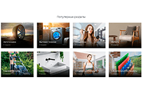
Плитки 2 — отложенная альтернатива, если появятся 8 фото категорий.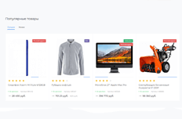
products = Плитки 3, вкладки
05 · Товары
Товары — Плитки 3 (вкладки)
Главная → Товары → Плитки 3Новинки / Акции / Хиты8 карточекПочемуПоказать, что каталог живой: цены, наличие, кнопка «В корзину» прямо с главной. Вкладки дают три подборки в одном блоке, не растягивая страницу.
Наполнение
- Новинки — из свойства «Новинка», 8 шт. Акции — из «Акция», бейдж BEETROOT #ae2573. Хиты — по продажам.
- В карточке: фото, название, артикул, цена, наличие (GREEN #009681), «В корзину».
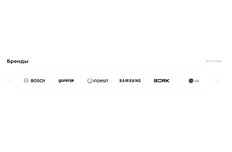
brands = Слайдер 2, логотипы
06 · Бренды
Бренды — Слайдер 2
Главная → Бренды → Слайдер 2серые логотипы, цвет по наведениюПочемуЗакупщик ищет инструмент под конкретный станок. Строка логотипов отвечает на вопрос «есть ли под мой Amada / TRUMPF» до перехода в каталог. Один ряд, не отвлекает.
Наполнение
- Amada · TRUMPF · Wila · Bystronic · LVD · Rolleri · Euromac · Finn-Power · Salvagnini · Durma. Ссылка — на раздел бренда в каталоге.
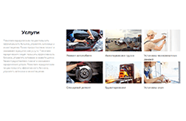
services = Плитки 8, текст + плитки с фото
07 · Услуги
Услуги — Плитки 8
Главная → Услуги → Плитки 86 плитокПочемуУслуги — вторая по марже линия и отличие от дилеров. Слева абзац о производстве, справа шесть плиток с фото цеха. Ставим после каталога: сначала товар, потом «сделаем, если нет».
Наполнение
- Изготовление по чертежу · Заточка и восстановление · Ремонт инструмента · Подбор под станок · Обучение операторов · Выезд к клиенту.
- Фото — реальные цеха Барус, не сток.
about = Блок 2 (видео + текст), под ним advantages = Цифры 5
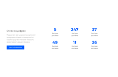
08 · О компании
О компании — Блок 2 + Цифры 5
Главная → О компании → Блок 2Преимущества → Цифры 5фон #232323ПочемуСередина страницы — доверие. Видео цеха + три факта, ниже шесть цифр. Тёмный фон #232323 по брендбуку разбивает белую страницу на две части: «что купить» сверху и «кто мы / что дальше» снизу.
Наполнение
- Заголовок «Барус Инструмент — производство и склад в Санкт-Петербурге с 2000 года». Абзац 3–4 строки. Видео 60–90 с.
- Цифры: 25 лет · 5 000+ позиций · 1 200+ клиентов · 10–20 дней изготовление · 1–3 дня отгрузка · 12 брендов.
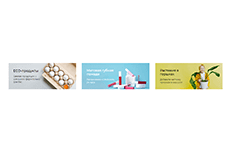
categories = Плитки 8, 8 плиток с иконками
09 · Отрасли
Отрасли — Плитки 8
Главная → Категории → Плитки 8иконки из брендбука 2022ПочемуВторой вход в каталог — от задачи клиента, а не от типа инструмента. Здесь используем отраслевые иконки из брендбука 2022 — они сделаны именно для этого и больше нигде на сайте не нужны.
Наполнение
- Авиастроение · Машиностроение · Металлургия · Логистика и склад · Энергетика · Строительство · Сервис · Приборостроение. Ссылка — на подборку в каталоге.
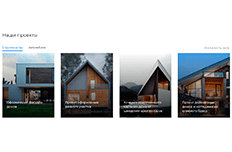
projects = Плитки 2
10 · Проекты
Проекты — Плитки 2
Главная → Проекты → Плитки 23 плиткиПочемуКейсы «изготовили под станок X для завода Y» — единственное, что дилеры не могут повторить. Три карточки с фото и одной строкой результата.
Наполнение
- 3 кейса: клиент, станок, что сделали, срок. Фото инструмента на станке.
reviews = Слайдер 7
11 · Отзывы
Отзывы — Слайдер 7
Главная → Отзывы → Слайдер 73–5 отзывовПочемуСразу после кейсов — подтверждение от клиентов. Слайдер, чтобы не занимать высоту.
Наполнение
- Компания, должность, 2–3 предложения. Скан благодарственного письма — по клику.

news = Плитки 1
12 · Новости
Новости — Плитки 1
Главная → Новости → Плитки 13 карточкиПочемуПоказывает, что компания работает: выставки, новые позиции, обучение. Три карточки, дата и заголовок. Выше не ставим — новости не продают.
Наполнение
- Последние 3 новости. Обязательное фото 600×400.
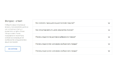
faq = Узкий 1
13 · Вопрос–ответ
Вопрос–ответ — Узкий 1
Главная → Вопрос-ответ → Узкий 15 вопросовПочемуСнимает вопросы менеджеру перед заявкой: сроки, оплата, чертежи, гарантия. Аккордеон, страницу не растягивает.
Наполнение
- Как заказать по чертежу · Сроки изготовления · Оплата и документы · Гарантия · Доставка.
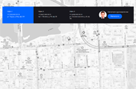
contacts = Список 1, карта
14 · Контакты
Контакты — Список 1
Главная → Контакты → Список 1карта ЯндексПочемуСклад и производство в СПб — реальный адрес, куда можно приехать. Карта с тёмной плашкой контактов — последнее, что видит клиент перед формой.
Наполнение
- Адрес, телефон, e-mail, режим работы, менеджер с фото и кнопкой «Написать».
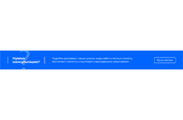
footer-blocks form = Широкая 1
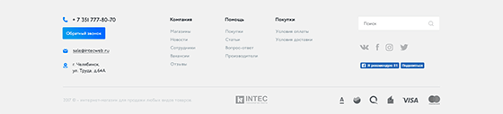
footer-template = 1, тема тёмная
15 · Форма и футер
Форма — Широкая 1, Футер — Тип 5
Футер → Блоки → Форма широкая 1Футер → Шаблон: Тип 5фон #232323ПочемуФорма «пришлите чертёж» — главная заявка для производства, ставим над футером на бирюзовой плашке. Футер Тип 1: логотип и контакты слева, колонки ссылок справа, кнопка «Обратный звонок» в блоке контактов.
Наполнение
- Форма: «Не нашли инструмент? Пришлите чертёж — посчитаем за 1 день». Поля: телефон, файл.
- Футер: Каталог · Услуги · Компания · Покупателям; контакты; VK, Telegram, YouTube; логотип вертикальный белый; © 2000–2026, политика, ИНН.
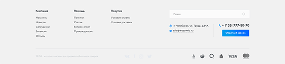
Тип 5 — отложенная альтернатива.Что отключить на главной
Сотрудники, Вакансии, Сертификаты, Коллекции, Фотогалерея, Статьи, Акции (отдельным блоком — они во вкладке «Товары»), Видео (в блоке «О компании»), Обзоры.